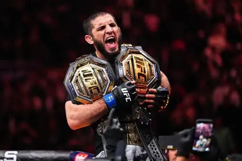

|
 |
|
| Nombre completo | Islam Ramazanovich Makhachev |
| Nacimiento | 27 de octubre de 1991 Makhachkala, Daguestán, Rusia |
| Apodo | No Mercy |
| Nacionalidad | Rusa |
| Altura | 1,78 m |
| Peso | Peso welter (170 lb / 77 kg) |
| Organización | Ultimate Fighting Championship (UFC) |
| Título | Campeón Mundial de Peso Welter de la UFC |
Islam Ramazanovich Makhachev (Makhachkala, Daguestán, Rusia; 27 de octubre de 1991) es un artista marcial mixto ruso que actualmente compite en la división de peso welter de la Ultimate Fighting Championship (UFC). Es el actual Campeón Mundial de Peso Welter y anteriormente fue campeón de peso ligero.
Makhachev nació en Makhachkala, en la República de Daguestán, Rusia, y realizó un extenso entrenamiento en sambo desde temprana edad, convirtiéndose en campeón mundial de esa disciplina antes de comenzar su carrera profesional de MMA en 2010.
Islam Makhachev firmó con la UFC y se destacó inicialmente en la división de peso ligero, donde conquistó el Campeonato Mundial derrotando a Charles Oliveira en octubre de 2022 y defendiendo el cinturón con éxito varias veces, estableciendo numerosos récords en esa categoría.
En 2025, Makhachev decidió subir al peso welter y en UFC 322 derrotó a Jack Della Maddalena por decisión unánime para proclamarse Campeón Mundial de Peso Welter de la UFC, convirtiéndose en uno de los pocos peleadores en la historia de la organización en ganar títulos en dos divisiones distintas.
Makhachev es conocido por su estilo basado en combat sambo, grappling dominante, control de posición y precisión en el striking. Su dominio en el suelo y su acondicionamiento físico lo han convertido en uno de los luchadores más completos y consistentes en las divisiones en las que ha competido.
Makhachev ha mantenido un récord profesional impresionante, con una amplia mayoría de victorias por sumisión, decisión y nocaut, y solo una derrota en su carrera profesional.